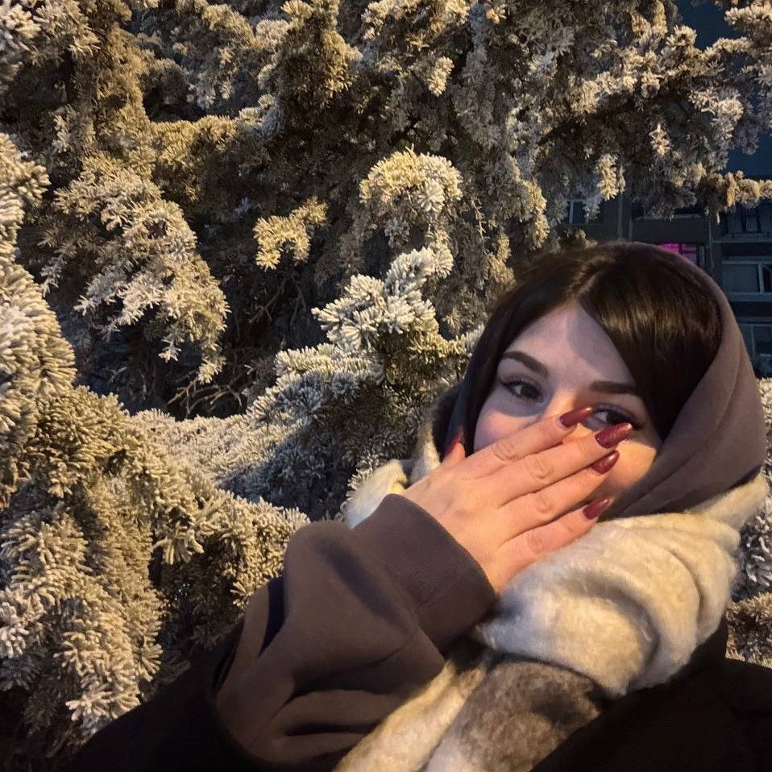
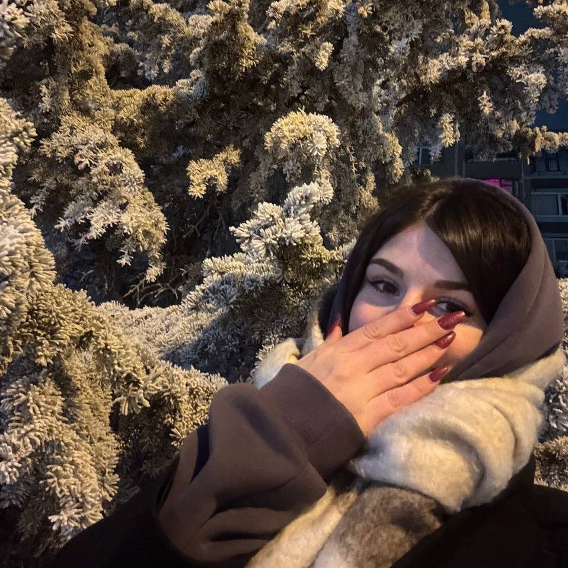

Солнышко, я очень счастлив, что мы вместе, безумно рад, что у меня такая девочка. Заинька, мы немножко припозднились и поэтому поздравляю тебя 16 фераля (хихихи). Но ничего же страшного.
Ты у меня самая лучшая, лубимая, красивая. Ты вообще самая умничка, я тебя очень сина сина люблю!!
 
